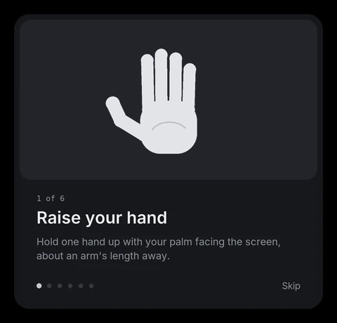

← Back to HandMouse 2
How to use HandMouse 2
Control your Windows laptop with one hand and a webcam. It takes about two minutes to learn.
1. Start it

Double-click HandMouse2.exe. The first start takes about 10 seconds.
- A small dark pill appears at the top of the screen. That's HandMouse.
- The tutorial opens in the middle of the screen the first time. Follow it: each step waits until you've done the gesture. While it's open, your clicks won't touch anything on the desktop.
2. Position your hand
- Sit at a normal distance from the laptop.
- Raise one relaxed hand, palm facing the screen, at about chest height.
- You don't need to stretch: small movements cover the whole screen.
3. The gestures
| To… | Do this |
|---|---|
| Move the cursor | Move your hand. The cursor follows your palm. |
| Click | Tap your thumb to your index finger. |
| Double-click | Tap twice. |
| Drag | Pinch your thumb and index finger, hold, move, let go. |
| Right-click | Tap your thumb to your middle finger. |
| Scroll | Pinch your thumb and middle finger, hold, move your hand up or down. |
As your fingers come together, a pink ring around the cursor fills up and the cursor slows down. When it's full, the click lands exactly where you aimed.
4. The pill
- Shows what's happening: Tracking, Dragging, Scrolling, No hand, Paused.
- Click it to see the camera view, with your hand skeleton and the reach area.
- Right-click it for Pause, Show tutorial and Quit.
- Drag it anywhere. It remembers where you put it.
5. Pause
Press Ctrl+Alt+H at any time. The camera switches off while paused. Press it again to resume.
Troubleshooting
| Problem | Fix |
|---|---|
| Pill says No camera | Close other apps using the webcam (Zoom, Camera), then restart HandMouse. |
| Your hand goes out of frame at the screen edges | Move back a little, or narrow box_left/box_right/box_top/box_bottom in HandMouse2_settings.json. |
| Clicks happen too easily | Lower pinch_close (for example 0.16). |
| You have to squeeze too hard | Raise pinch_close (for example 0.22). |
| The cursor feels shaky | Lower filter_min_cutoff (for example 0.6). |
Restart HandMouse after changing the settings file.